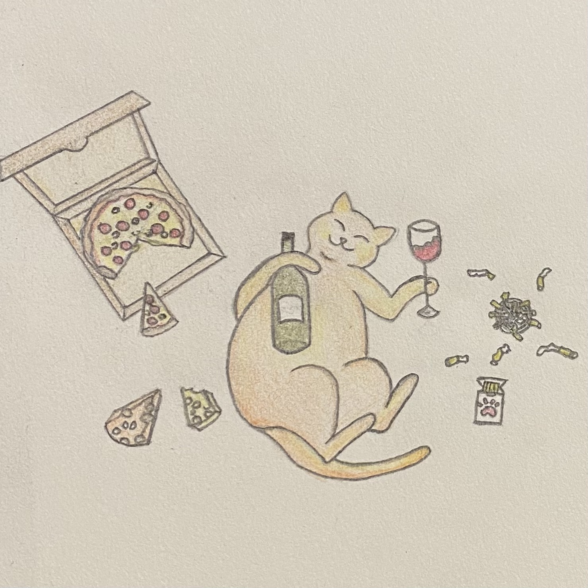
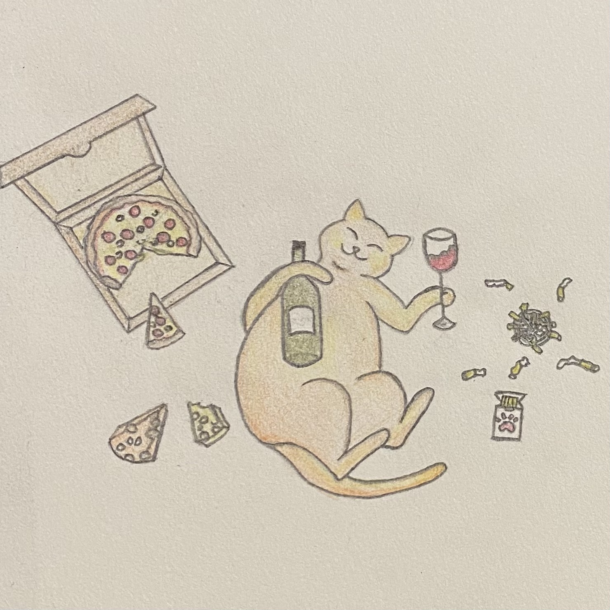

Art by Kenza
Art by Kenza

Art by Kenza
Art by Kenza


 


Explore my collection of pastel, ink, and pencil drawings:
See Drawings


Discover my acrylic, watercolor, and oil paintings:
See Paintings